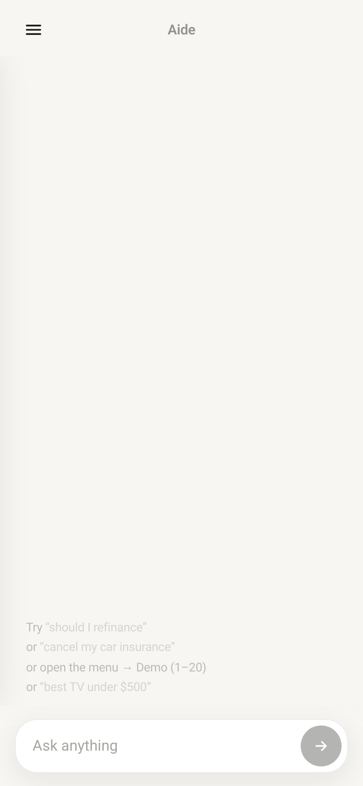
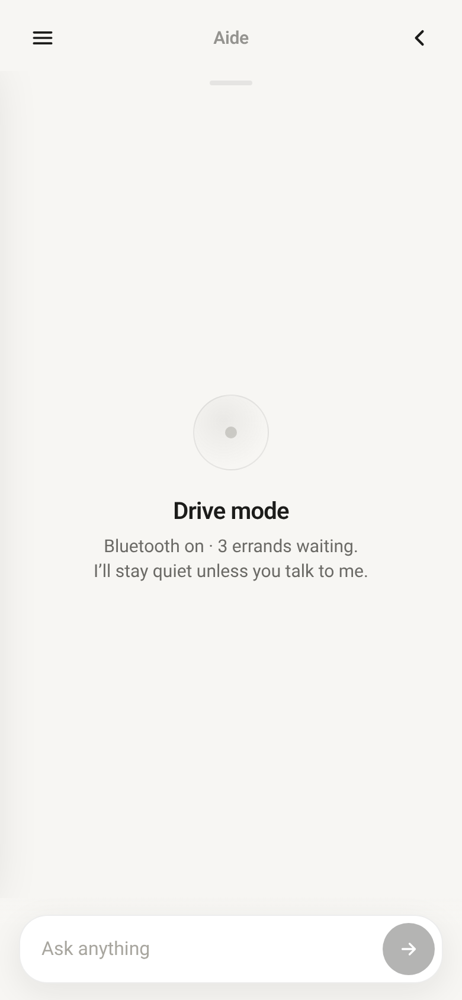
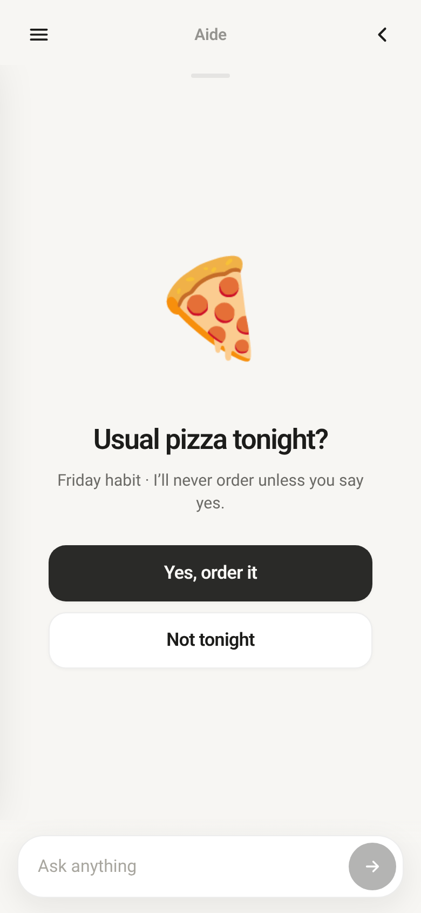
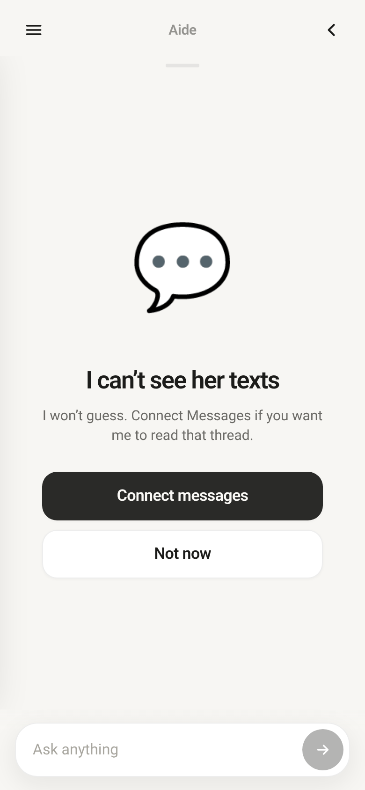
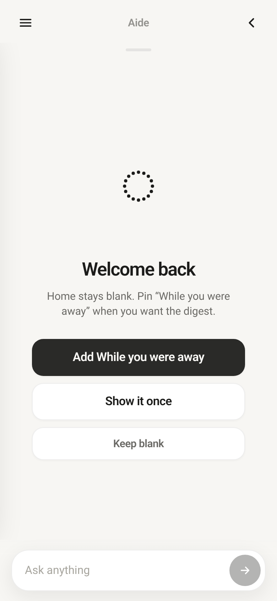

An answer I can use, not a conversation I have to dig through.
My role
Concept, interaction direction and critique
Build partner
AI-generated code, under my direction
Process
20 everyday scenarios 4 prototype versions
Status
Working interface concept Not a live assistant
The problem
Life doesn’t happen in a chat window.
I’m working, driving, or with my kids. I don’t want another feed to manage, a wall of text to read, or an assistant that takes action before I’m ready.
I wanted to explore something simpler: ask for help, get a useful screen, and get back to life.
The insight
Every answer should survive being abandoned halfway.
That became my design rule. Quiet when I’m busy. Clear when I return. The hard part isn’t making AI do more. It’s deciding what it should leave alone.
The interface
Six decisions. One calmer assistant.
01 / Start with less
A blank screen is a feature.
I kept one input bubble at the bottom and a three-line menu so the assistant doesn’t compete for my attention.
The space above the bubble becomes the answer—not a scrolling chat history. My direction: customize by asking, not by hunting through settings.

v4 · A quiet starting point, with demo hints.
02 / Respect the moment
Driving? Stay quiet.
I chose silence until I speak because helpfulness shouldn’t become another interruption behind the wheel.
The same principle changes the tone on a rough day and limits a late-night time reminder to one gentle mention.

v3 · Drive-mode interaction, simulated.
03 / Keep the trigger human
Offer the usual. Never assume yes.
I made pizza a yes/no choice because remembering a habit isn’t permission to spend my money.
For risky actions, my rule is a warning, an explicit choice, then Face ID confirmation. I also asked for a Face ID lock so my kids can’t get in.
Prototype boundary: ordering and Face ID are demonstrations, not real transactions or biometric security.

v4 · A suggestion, not an automatic purchase.
04 / Earn trust
Don’t guess. Offer a way forward.
I asked Aide to name what it can’t see and offer a fix, because an honest limit is more useful than a confident invention.
If an answer is wrong, fix it and explain. If it’s about money, hand it to the specialist rather than pretending one assistant knows everything.

v4 · Connection prompt shown as a concept only.
05 / Make decisions visible
Side by side. Ready to choose.
I put Saturday and Sunday together so I can compare the weekend at a glance instead of piecing it together from prose.
The answer should take the shape of the decision: a comparison, a yes/no card, or one-click views for homework help.
v4 · Sample weather, not a live forecast.
06 / Make room to return
Catch me up. Only if I want it.
I made “While you were away” optional so coming back doesn’t mean facing a backlog I never asked to see.
The larger direction: track unfinished tasks quietly and offer them at natural moments. After a crash, reopen to a calm, blank home—not a wall of recovery messages.

v4 · The return experience is a choice.
How I worked
I directed. AI built. I critiqued.
I’m not a coder. I used an AI build partner to turn my decisions into interfaces I could tap through on my phone.
Start with real life.
I answered 20 scenarios involving family, work, driving, spending, mistakes, and coming back after time away.
Make the behavior tangible.
Across four versions, I directed the layout, tone, choices, and boundaries—not just the look of a screen.
Keep making it simpler.
I critiqued what felt wrong and chose what should happen next. The scenarios gave each iteration a clear design brief.
What this proves—and what it doesn’t. I turned my preferences into a coherent, tappable interaction concept. These are personal scenario decisions, not user research or validated outcomes. The demo uses scripted responses and example data; it has no live integrations, real purchases, or working Face ID. Persistent task memory remains a design direction to build and test.
What’s next
Test the quiet parts.
My next step is to find out whether these choices help people beyond me.
Watch someone leave a task halfway through, then return. Can they find their place without a history feed?
Test whether confirmations feel clear—not automatic or easy to tap by mistake.
Explore persistent task memory, accessible controls, and real authentication before connecting consequential actions.
I’m a USMC veteran and a fiber troubleshooter at a power company. Before that, I spent 15 years as Director of Operations at a large communications company.
I bring an operator’s eye and a consumer advocate’s instincts to product design. I care about what feels clear, what earns trust, and what gets out of people’s way. Simpler wins.
The skill I’m building
Directing AI as a build partner: making the product decisions, explaining why they matter, and refining the result until the behavior matches the intent.